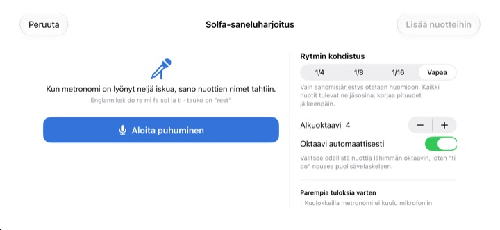
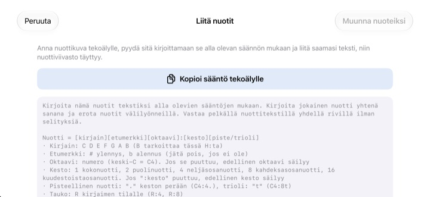

Älä laske päässäsi.
Kuuntele.
Kirjoita ne kaksi tahtia, joihin kompastut, ja napauta toistoa. Tahdin mittaisen sisäänlaskun jälkeen sovellus soittaa ne metronomin tahdissa juuri kirjoitetulla rytmillä ja sävelkorkeudella.
Kaikki ominaisuudet ovat ilmaisia. iPhonelle ja iPadille.

Kirjoita muutama nuotti ja kuuntele
Pidä sormea viivastolla ja liu’uta ylös tai alas vaihtaaksesi säveltä, nosta sormi niin nuotti asettuu. Paina Soita, niin kuulet sen tahdin mittaisen sisäänlaskun jälkeen. Ääntä tulee, tarkista äänenvoimakkuus.
Menikö laskeminen taas sekaisin kesken tahdin?
Pisteellinen kahdeksasosa, sitten kuudestoistaosa ja heti perään trioli. Naputat rytmiä polveen ja jossain tahdin keskellä se hajoaa. Kuoroharjoitusta edeltävänä iltana pianoa ei yleensä ole lähelläkään. StaffSingerissä riittää, että kirjoitat ne kaksi tahtia, niin kuulet tarkan rytmin ja sävelkorkeuden.
Rytmi ja sävelkorkeus juuri kuten kirjoitettu
Tahdin mittaisen sisäänlaskun jälkeen musiikki soi metronomin naksutuksen tahdissa, ja soiva nuotti syttyy oranssiksi. Tempo on säädettävissä välillä 40–200 BPM, ja tahtilajiksi voi valita 4/4, 3/4, 2/4, 6/8, 2/2 tai 3/8.
Samalle iskulle pinotut nuotit soivat yhdessä sointuna, ja voit kirjoittaa enintään kolme ääntä. Mukana ovat G-avain, alttoavain, F-avain ja etumerkinnät.

Sano sävelten nimet, ja niistä tulee nuotteja
Kun metronomi on naksuttanut neljä iskua, sano do re mi tahdissa, ja nuotit ilmestyvät viivastolle. Kun osut iskuun, myös nuottiarvo tallentuu neljäsosina, kahdeksasosina tai kuudestoistaosina. Tauon kohdalla sano rest.
Sano sävelten nimet englanniksi. Puhe tunnistetaan vain laitteella eikä sitä tallenneta.

Nuottikuva tekoälylle, vastaus liitetään
Napauta Kopioi sääntö tekoälylle, anna se tekoälylle yhdessä nuottikuvan kanssa ja liitä saamasi teksti. Viivasto täyttyy itsestään. Muoto on alla olevassa taulukossa.
Voit myös kuvata paperinuotit, pitää kuvan näytöllä ja kirjoittaa niitä katsoen.

Alkuun kolmessa vaiheessa
- 1
Valitse hankalat tahdit
Sovellus aukeaa tyhjällä kahden tahdin viivastolla.
- 2
Kirjoita nuotit
Paina viivastoa tai soita pianon koskettimilla.
- 3
Napauta toistoa
Sisäänlasku ja sitten toisto metronomin kanssa.
Tekstimuoto liittämistä varten
- C4:4
- C oktaavissa 4, neljäsosa (keski-C on C4)
- D:8
- Ilman oktaavia edellinen jatkuu
- F#4:8 · Bb4:4
- # on ylennysmerkki, b alennusmerkki
- E4
- Ilman :nuottiarvoa edellinen jatkuu
- :1 · :2 · :4 · :8 · :16
- kokonuotti, puolinuotti, neljäsosa, kahdeksasosa, kuudestoistaosa
- C4:4.
- pisteellinen nuotti
- C4:8t
- trioli
- R:4 · R:8
- tauot
Sovelluksen Kopioi sääntö tekoälylle -painike kopioi juuri nämä ohjeet. Erota nuotit välilyönneillä.
Kaikki ominaisuudet ovat ilmaisia
Ilmainen
- Kirjoitus viivastolle ja kahden oktaavin piano
- Toisto sisäänlaskun ja metronomin kanssa
- Soinnut ja kolme ääntä
- Etumerkinnät ja kolme avainta
- Sävelnimien sanelu äänellä
- Tekstin liittäminen ja vertailukuva
Tue kehittäjää
- Lähetä pieni tippi asetuksista
- Tippi ei avaa lisäominaisuuksia
Ei tilaus. Jokainen tippi on kertamaksu.
Ei mainoksia eikä tiliä.
Usein kysyttyä
Miten lisään nuotteja?
Valitse ensin nuottiarvo työkalupalkista ja paina sitten viivastoa haluamallasi korkeudella. Kun pidät sormea, sävel soi, ja kun nostat sen, nuotti lisätään. Näppäimistöpainikkeesta avautuu kahden oktaavin piano.
Miten teen soinnun?
Laita työkalupalkin Sointu-painike päälle ja lisää nuotteja. Ne pinoutuvat valitun nuotin päälle ja soivat yhdessä.
Miten korjaan nuotin?
Vedä nuottia ylös tai alas muuttaaksesi sävelkorkeutta tai sivulle siirtääksesi sen toiselle iskulle. Kun nuotti on valittuna, ♯ ♭ siirtävät sitä puolisävelaskeleen ja 8va oktaavin.
Mistä vaihdan tempon ja tahtilajin?
Asetuksista, samasta paikasta kuin avaimen ja etumerkinnät. Siellä myös metronomi ja sisäänlasku kytketään päälle ja pois.
Ääntä ei kuulu.
Tarkista äänetön tila ja median äänenvoimakkuus. Jos vain metronomi puuttuu, varmista, että se on päällä asetusten kohdassa Toiston apuvälineet.
Sanelu sekoittaa nuotit.
Käytä kuulokkeita, ettei metronomi kuulu mikrofoniin, ja sano yksi nuotti selvästi jokaisella iskulla. Väärän nuotin voi vain vetää oikealle paikalle.
Miksi sovellus tarvitsee kameraa?
Vain paperinuottien kuvaamiseen, jotta voit pitää kuvan näytöllä vertailua varten. Kuvat eivät koskaan lähde laitteelta. Ilman kameran käyttöoikeutta voit valita kuvan kirjastosta.
Millä laitteilla se toimii?
iPhonessa ja iPadissa, joissa on iOS 17 tai uudempi. Käyttöliittymä on tehty vaakasuuntaan.
Lähetetäänkö nuottejani tai ääntäni jonnekin?
Ei. Nuotit, kuvat ja ääni pysyvät laitteella, ja kaikki toimii ilman internetiä. iCloudiin lähetetään vain nimetöntä käyttötilastoa ja kaatumisraportteja sovelluksen parantamiseksi.
Miten saan yhteyden?
Lähetä sähköpostia osoitteeseen leeo@kakao.com, vastaus tulee yleensä 2–3 arkipäivän kuluessa. Virheitä ja ideoita voi lähettää myös issueina GitHubissa: M1zz/StaffSinger.
Kysymyksiä tai palautetta? Kirjoita osoitteeseen leeo@kakao.com.